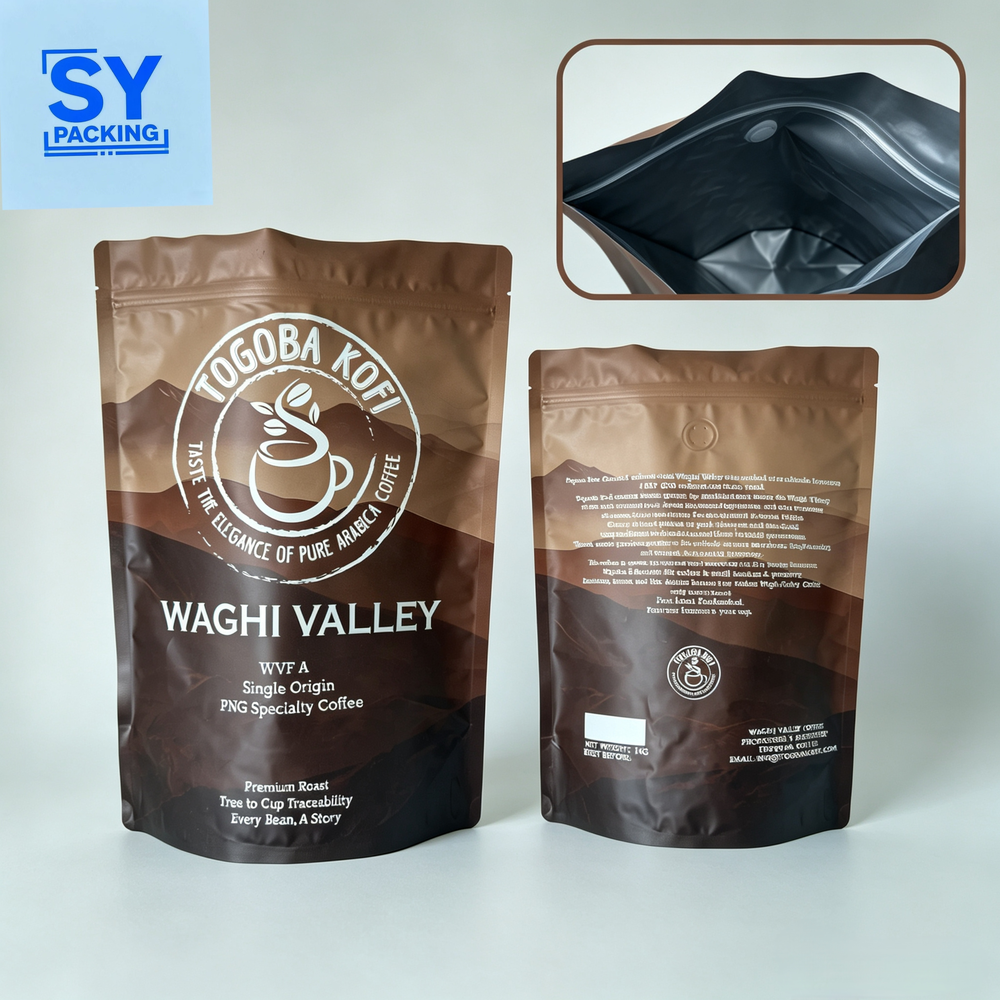

Shelf-Life Extension for Specialty Foods: How Multi-Layer Laminates Prevent Oxidation & Moisture Loss

For specialty food brands—ranging from artisanal coffee roasters and loose-leaf tea producers to gourmet snack manufacturers—packaging is much more than a simple container. It is the ultimate frontline defense protecting aroma, flavor, and nutritional integrity from factory floor to consumer cup.
The Invisible Threats: Oxygen and Moisture
When packaging sensitive dry foods, two invisible enemies constantly threaten product quality: oxygen and water vapor. Uncontrolled oxygen exposure leads to lipid oxidation, turning coffee oils rancid and stripping tea leaves of their delicate volatiles. Similarly, moisture ingress causes caking, microbial growth, and a loss of the satisfying crunch in dry snacks.
Engineering Excellence: The Power of Multi-Layer Structures
To combat these threats, standard single-layer plastic bags fall short. At Shenying Packing, we engineer high-performance laminate structures—such as our matte PET/AL/PE compositions (110 µm thickness)—that combine the printability of PET, the supreme light and gas barrier of aluminum foil, and the heat-sealing strength of polyethylene.
Backed by rigorous laboratory testing, our packaging meets stringent international transmission standards:
- Oxygen Transmission Rate (OTR): Maintained at low permeability levels of 0.5 cm³/(m²·24h) (tested via ASTM D3985).
- Water Vapor Transmission Rate (WVTR): Controlled at strict thresholds like 0.54 g/(m²·24h) (tested via ASTM F1249).
Functional Features That Enhance Shelf Life
Beyond material composition, structural design plays a critical role in preservation and user experience:
- Flat Bottom / Box Pouch Stability: Maximizes shelf presence while offering robust structural integrity for heavier volumes.
- One-Way Degassing Valves: Essential for fresh-roasted coffee beans, allowing trapped carbon dioxide to escape without letting ambient oxygen in.
- Resealable Zippers: Preserves product freshness throughout multiple consumer uses after initial opening.
Partner with Packaging Experts
Extending your product's shelf life requires a tailored approach. Whether you are launching a new line of single-origin coffee or scaling up your tea brand's distribution, our packaging engineers are ready to help you optimize your material specifications.
Ready to upgrade your food packaging protection?
Our team can help you select the right barrier structure for your specific shelf-life requirements.
📧 Email: may.lee@shenyingpacking.com
💬 WhatsApp: +86 13424643780
🌐 Website: www.shenyingpacking.com